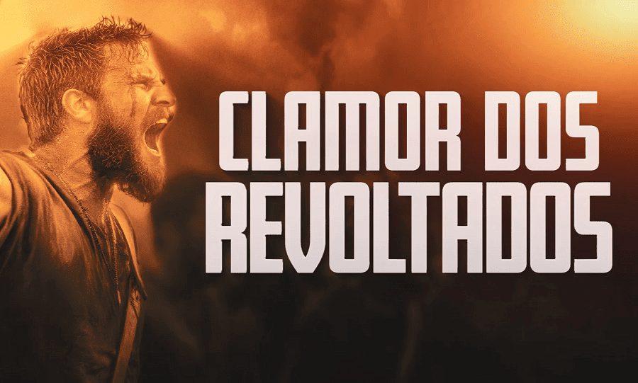

Às 22h, no Templo de Salomão, bispos de todo o Brasil e centenas de pastores vão se unir aos Bispos Renato Cardoso, Adilson Silva e Jadson Santos, em um só espírito de revolta.
Neste dia 15 de setembro, acontece o “Clamor dos Revoltados”, com a bênção para os que devem no cartão de crédito.
Todo grande avanço começa com uma insatisfação. Nenhum profissional rompe barreiras se primeiro não se revoltar, sobretudo, contra os limites que o prendem. Entenda que a revolta verdadeira não é desordem, é energia. Quem a usa de forma certa vira o jogo e escreve uma nova história. Por isso, nesta segunda-feira, teremos a união de fé que traz resultados. Um grito de fé para determinar a transformação da sua vida financeira.
Às 22h, no Templo de Salomão, junto aos Bispos Renato Cardoso, Adilson Silva e Jadson Santos, bispos de todos os estados brasileiros e centenas de pastores vão se unir em um só espírito de revolta contra a miséria, a humilhação e a escravidão financeira.
Muitas pessoas passam a vida lutando para se tornar prósperas. Mas mesmo que obtenham conquistas, com o tempo, acabam perdendo. A verdadeira prosperidade está diretamente ligada a uma vida com Deus. Envolve uma satisfação de modo geral. O que se traduz em paz e realização familiar bem como profissional. Também saúde. E, além disso, uma condição financeira favorável. Por isso, compareça a este encontro especial.
Às 7h, 10h, 12h, 15h, 18h30 e, especialmente, das 22h às 23h30, no Templo de Salomão, localizado na Avenida Celso Garcia, 605, no bairro do Brás, na zona leste de São Paulo.
Clique aqui e encontre também o endereço de uma Universal perto de você.